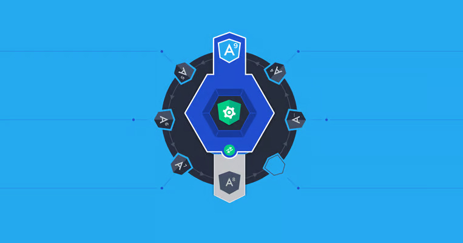

Micro-frontend architecture is a design approach in which a front-end app is decomposed into individual, semi-independent “microapps” working loosely together. The micro-frontend concept is vaguely inspired by, and named after, microservices.
Although micro frontends have been getting a lot of attention lately, as of yet there is no single dominant implementation and no clear “best” micro-frontend framework. In fact, there is a variety of approaches depending on the objectives and requirements. See the bibliography for some of the better-known implementations.
Our implementation is called Yumcha. The literal meaning of “yum cha” in Cantonese is “drinking tea,” but its everyday meaning is “going out for dim sum.” The idea here is that the individual microapps within a macroapp (as we shall call the composed, top-level app) are analogous to the various baskets of bite-size portions brought out at a dim sum lunch.
We will sometimes refer to Yumcha as a “micro-frontend framework.” In today’s world, the term “framework” is usually used to refer to Angular, React, Vue.js, or other similar superstructures for web apps. We are not talking about a framework in that sense at all. We call Yumcha a framework just for the sake of convenience: It is actually more of a set of tools and a few thin layers for building micro frontend–based apps.